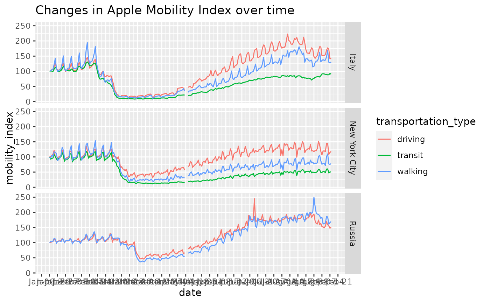
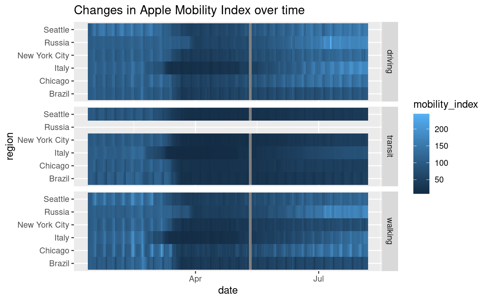
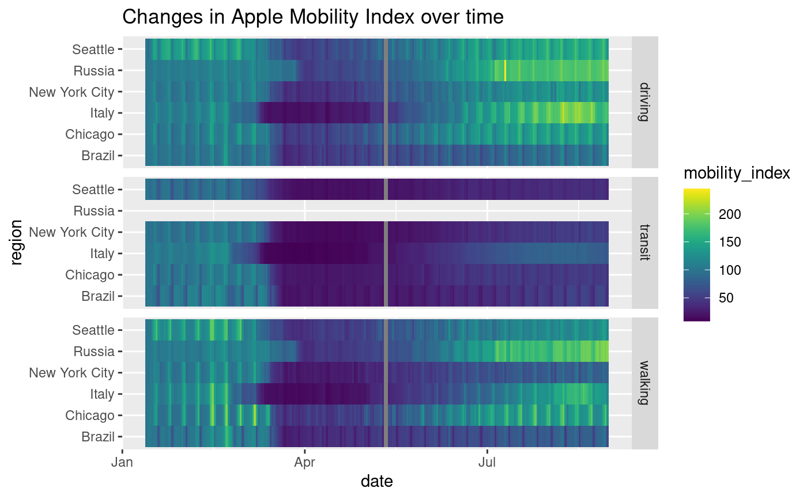
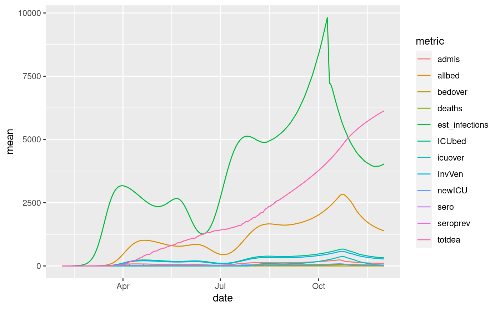

R/sars2pack-package.R
sars2pack-package.RdOn January 30, 2020, the World Health Organization declared coronavirus disease 2019 (COVID-19) a Public Health Emergency of International concern (PHEIC) and within six weeks had characterized the outbreak as a pandemic. Compared to the 2003-2004 severe acute respiratory syndrome (SARS) PHEIC, the COVID-19 pandemic is spreading more quickly and with a much higher death toll. However, the current pandemic is occurring in a more digital and interconnected world. Traditional public health organizations as well as data-mature organizations not traditionally involved directly in public health have rapidly developed digital disease surveillance infrastructuree that provides nearly realtime epidemic tracking data. These data resources have proven invaluable to understanding disease spread, to drive non-pharmacologic intervention (NPI), and, when combined with additional data resources, to project impacts to communities and healthcare systems around the world. Even as the urgency of the initial “hammer” of the COVID-19 pandemic begins to abate, the need for timely, robust, and granular datasets will inform business, policy, and even personal decisions for months or even years to come.
The sars2pack R package aims to:
Collect COVID-19 related public health and disease tracking resourcesand provide principled approach date reuse and reproducible computational research.
Provide a data science environment for researchers, media, policy makers, and data scientists to collaborate while promoting reproducible computational research best practices.
Capitalize on the large, existing multidisciplinary data science workforce already familiar with the R programming environment.
Create opportunities for individuals not well-versed in data science to learn and experiment with COVID-19 datasets.
Incorporate examplar workflows that leverage the extensive R data science ecosystem to visualize, analyze, and integrate COVID-19 data resources.
The foo functions ...
#> name #> 1 United States CDC Social Vulnerability Index #> 2 Extensive United States hospital capabilities #> 3 The Economist: Excess deaths during COVID pandemic #> 4 The : Excess deaths during COVID pandemic #> 5 US county health rankings from 'https://www.countyhealthrankings.org' #> 6 CoronaNet government response database #> 7 Country metadata from restcountries.eu #> 8 Our World In Data testing and cases reporting #> 9 GISAID metadata from thousands of SARS-CoV-2 sequences #> 10 Newick tree from thousands of SARS-CoV-2 sequences #> 11 US CDC excess deaths dataset #> 12 Published epidemic parameters for COVID-19 #> 13 Aggregated projections from US CDC #> 14 Google mobility data #> 15 European CDC world tracking #> 16 beoutbreakprepared #> 17 EU data Github aggregator #> 18 Descartes Labs Mobility Data #> 19 Apple mobility data from maps #> 20 USA Facts #> 21 Johns Hopkins dataset #> 22 Johns Hopkins US-centric data #> 23 New York Times county level data #> 24 New York Times state level data #> 25 Kaiser Family Foundation ICU bed data #> 26 United States county-level geographic details #> 27 CovidTracker data #> 28 CovidCare United States Healthcare Capacity #> 29 Oxford Government Policy Intervention time series #> 30 Healthdata.org mobility data #> 31 Healthdata.org projections of hospital utilization and deaths #> 32 United States social distancing policies #> 33 OECD International Unemployment Data #> 34 healthdata.org COVID-19 Mobility Observations and Projections #> 35 healthdata.org COVID-19 Testing Observations and Projections #> accessor data_type #> 1 cdc_social_vulnerability_index demographics #> 2 us_hospital_details healthcare capacity #> 3 economist_excess_deaths time series, deaths, excess deaths #> 4 financial_times_excess_deaths time series, deaths, excess deaths #> 5 us_county_health_rankings demographics #> 6 coronanet_government_response_data public policy #> 7 country_metadata demographics #> 8 owid_data time series, cases, deaths, testing #> 9 cov_glue_lineage_data line list #> 10 cov_glue_newick_data phylogenetic #> 11 cdc_excess_deaths time series, deaths, excess deaths #> 12 param_estimates_published miscellaneous #> 13 cdc_aggregated_projections projections #> 14 google_mobility_data mobility #> 15 ecdc_data time series, cases, deaths #> 16 beoutbreakprepared_data line list #> 17 eu_data_cache_data time series, cases, deaths #> 18 descartes_mobility_data time series, mobility #> 19 apple_mobility_data time series, mobility #> 20 usa_facts_data time series, cases, deaths #> 21 jhu_data time series, cases, deaths #> 22 jhu_us_data time series, cases, deaths #> 23 nytimes_county_data time series, cases, deaths #> 24 nytimes_state_data time series, cases, deaths #> 25 kff_icu_beds healthcare capacity #> 26 us_county_geo_details demographics, geographic #> 27 covidtracker_data time series, cases, deaths, testing #> 28 us_healthcare_capacity healthcare capacity #> 29 government_policy_timeline public policy #> 30 healthdata_mobility_data time series, projections, mobility #> 31 healthdata_projections_data time series, projections, cases, deaths #> 32 us_state_distancing_policy public policy #> 33 oecd_unemployment_data economics, time series #> 34 healthdata_mobility_data mobility, time series, projections #> 35 healthdata_testing_data testing, time series, projections #> geographical geospatial region resolution #> 1 TRUE FALSE United States admin2 #> 2 TRUE TRUE United States individual hospital #> 3 TRUE FALSE International admin0, admin1 #> 4 TRUE FALSE International admin0, admin1 #> 5 TRUE FALSE United States admin0, admin1, admin2 #> 6 TRUE FALSE World admin0, admin1 #> 7 TRUE FALSE World admin0 #> 8 TRUE FALSE World admin0 #> 9 TRUE FALSE World multiple #> 10 FALSE FALSE World multiple #> 11 TRUE FALSE United States admin1 #> 12 FALSE FALSE NULL NULL #> 13 TRUE FALSE NULL admin0, admin1 #> 14 TRUE FALSE World admin0, admin1, admin2 #> 15 TRUE FALSE World admin0 #> 16 TRUE FALSE World patient #> 17 TRUE FALSE Europe admin0, admin1 #> 18 TRUE FALSE United States admin1 #> 19 TRUE FALSE World admin0, admin1, admin2, admin3 #> 20 TRUE FALSE United States admin1 #> 21 TRUE FALSE World admin0 #> 22 TRUE FALSE United States admin1, admin2 #> 23 TRUE FALSE United States admin2 #> 24 TRUE FALSE United States admin1 #> 25 TRUE TRUE United States Individual hospital #> 26 TRUE TRUE United States admin2 #> 27 TRUE FALSE United States admin1 #> 28 TRUE TRUE United States Individual hospital #> 29 TRUE FALSE World admin0 #> 30 TRUE FALSE United States, World admin1, admin2 #> 31 TRUE FALSE United States, World admin1, admin2 #> 32 TRUE FALSE United States admin1 #> 33 TRUE FALSE World admin0 #> 34 TRUE FALSE International admin0, admin1 #> 35 TRUE FALSE International admin0, admin1 #> url #> 1 https://svi.cdc.gov/ #> 2 https://hub.arcgis.com/datasets/geoplatform::hospitals #> 3 https://github.com/TheEconomist/covid-19-excess-deaths-tracker #> 4 https://github.com/Financial-Times/coronavirus-excess-mortality-data #> 5 https://www.countyhealthrankings.org #> 6 https://coronanet-project.org/index.html #> 7 https://restcountries.eu #> 8 https://ourworldindata.org/coronavirus #> 9 https://github.com/hCoV-2019/lineages #> 10 https://github.com/hCoV-2019/lineages #> 11 https://www.cdc.gov/nchs/nvss/vsrr/covid19/excess_deaths.html #> 12 https://github.com/midas-network/COVID-19/blob/master/parameter_estimates/2019_novel_coronavirus/estimates.csv #> 13 https://www.cdc.gov/coronavirus/2019-ncov/covid-data/forecasting-us.html #> 14 https://www.google.com/covid19/mobility/ #> 15 https://www.ecdc.europa.eu/en/covid-19 #> 16 https://github.com/beoutbreakprepared/nCoV2019 #> 17 https://github.com/covid19-eu-zh/covid19-eu-data #> 18 https://raw.githubusercontent.com/descarteslabs/DL-COVID-19 #> 19 https://www.apple.com/covid19/mobility #> 20 https://usafacts.org/visualizations/coronavirus-covid-19-spread-map/ #> 21 https://github.com/CSSEGISandData/COVID-19 #> 22 https://github.com/CSSEGISandData/COVID-19 #> 23 https://raw.githubusercontent.com/nytimes/covid-19-data #> 24 https://raw.githubusercontent.com/nytimes/covid-19-data #> 25 https://khn.org/news/as-coronavirus-spreads-widely-millions-of-older-americans-live-in-counties-with-no-icu-beds #> 26 https://github.com/josh-byster/fips_lat_long #> 27 https://covidtracking.com/ #> 28 https://github.com/covidcaremap/covid19-healthsystemcapacity #> 29 https://www.bsg.ox.ac.uk/research/research-projects/oxford-covid-19-government-response-tracker #> 30 http://www.healthdata.org/covid #> 31 http://www.healthdata.org/covid #> 32 https://github.com/COVID19StatePolicy/SocialDistancing/ #> 33 https://oecd.org #> 34 https://covid19.healthdata.org/projections #> 35 https://covid19.healthdata.org/projectionsexample(jhu_data)#> #> jhu_dt> res = jhu_data() #> #> jhu_dt> colnames(res) #> [1] "ProvinceState" "CountryRegion" "Lat" "Long" #> [5] "date" "count" "subset" #> #> jhu_dt> head(res) #> # A tibble: 6 x 7 #> ProvinceState CountryRegion Lat Long date count subset #> <chr> <chr> <dbl> <dbl> <date> <dbl> <chr> #> 1 NA Afghanistan 33 65 2020-01-22 0 confirmed #> 2 NA Afghanistan 33 65 2020-01-23 0 confirmed #> 3 NA Afghanistan 33 65 2020-01-24 0 confirmed #> 4 NA Afghanistan 33 65 2020-01-25 0 confirmed #> 5 NA Afghanistan 33 65 2020-01-26 0 confirmed #> 6 NA Afghanistan 33 65 2020-01-27 0 confirmed #> #> jhu_dt> dplyr::glimpse(res) #> Rows: 129,525 #> Columns: 7 #> $ ProvinceState <chr> NA, NA, NA, NA, NA, NA, NA, NA, NA, NA, NA, NA, NA, NA,… #> $ CountryRegion <chr> "Afghanistan", "Afghanistan", "Afghanistan", "Afghanist… #> $ Lat <dbl> 33, 33, 33, 33, 33, 33, 33, 33, 33, 33, 33, 33, 33, 33,… #> $ Long <dbl> 65, 65, 65, 65, 65, 65, 65, 65, 65, 65, 65, 65, 65, 65,… #> $ date <date> 2020-01-22, 2020-01-23, 2020-01-24, 2020-01-25, 2020-0… #> $ count <dbl> 0, 0, 0, 0, 0, 0, 0, 0, 0, 0, 0, 0, 0, 0, 0, 0, 0, 0, 0… #> $ subset <chr> "confirmed", "confirmed", "confirmed", "confirmed", "co…example(apple_mobility_data)#> #> appl__> res = apple_mobility_data() #> #> appl__> colnames(res) #> [1] "geo_type" "region" "transportation_type" #> [4] "alternative_name" "sub-region" "country" #> [7] "date" "mobility_index" #> #> appl__> head(res) #> # A tibble: 6 x 8 #> geo_type region transportation_… alternative_name `sub-region` country #> <chr> <chr> <chr> <chr> <chr> <chr> #> 1 country… Alban… driving NA NA NA #> 2 country… Alban… driving NA NA NA #> 3 country… Alban… driving NA NA NA #> 4 country… Alban… driving NA NA NA #> 5 country… Alban… driving NA NA NA #> 6 country… Alban… driving NA NA NA #> # … with 2 more variables: date <date>, mobility_index <dbl> #> #> appl__> table(res$transportation_type) #> #> driving transit walking #> 527304 38406 61415 #> #> appl__> require(ggplot2) #> #> appl__> pl = res %>% #> appl__+ dplyr::filter(region %in% c('Russia','New York City','Italy')) %>% #> appl__+ ggplot(aes(x=date)) + #> appl__+ geom_line(aes(y=mobility_index,color=transportation_type)) + #> appl__+ scale_x_date(date_breaks = '1 week', date_labels='%b-%d') + #> appl__+ facet_grid(rows=vars(region)) + #> appl__+ ggtitle('Changes in Apple Mobility Index over time') #> #> appl__> pl#> #> appl__> regs_of_interest = c('Seattle', 'New York City', #> appl__+ 'Chicago', 'Italy', #> appl__+ 'Russia', 'UK', #> appl__+ 'Brazil') #> #> appl__> res %>% #> appl__+ dplyr::filter(region %in% regs_of_interest) %>% #> appl__+ ggplot(aes(x=date, y=region, fill=mobility_index)) + #> appl__+ geom_tile() + #> appl__+ facet_grid(rows=vars(transportation_type)) + #> appl__+ ggtitle('Changes in Apple Mobility Index over time')#> #> appl__> if(require(viridis)) { #> appl__+ res %>% #> appl__+ dplyr::filter(region %in% regs_of_interest) %>% #> appl__+ ggplot(aes(x=date, y=region, fill=mobility_index)) + #> appl__+ geom_tile() + #> appl__+ facet_grid(rows=vars(transportation_type)) + #> appl__+ scale_fill_viridis() + #> appl__+ ggtitle('Changes in Apple Mobility Index over time') #> appl__+ }#> #> appl__> if(require(plotly)) { #> appl__+ ggplotly(pl) #> appl__+ }example(healthdata_projections_data)#> #> hlth__> res = healthdata_projections_data() #> #> hlth__> colnames(res) #> [1] "location_name" "date" "allbed_mean" #> [4] "ICUbed_mean" "InvVen_mean" "admis_mean" #> [7] "newICU_mean" "bedover_mean" "icuover_mean" #> [10] "deaths_mean" "totdea_mean" "est_infections_mean" #> [13] "allbed_upper" "ICUbed_upper" "InvVen_upper" #> [16] "admis_upper" "newICU_upper" "bedover_upper" #> [19] "icuover_upper" "deaths_upper" "totdea_upper" #> [22] "est_infections_upper" "allbed_lower" "ICUbed_lower" #> [25] "InvVen_lower" "admis_lower" "newICU_lower" #> [28] "bedover_lower" "icuover_lower" "deaths_lower" #> [31] "totdea_lower" "est_infections_lower" #> #> hlth__> res[sample(1:nrow(res),6),] #> # A tibble: 6 x 32 #> location_name date allbed_mean ICUbed_mean InvVen_mean admis_mean #> <chr> <date> <dbl> <dbl> <dbl> <dbl> #> 1 Bulgaria 2020-09-18 367. 109. 99.2 53.0 #> 2 Provincia au… 2020-09-22 0.0287 0.00839 0.008 0.00756 #> 3 Latvia 2020-09-13 0 0 0 0 #> 4 Ceará 2020-06-14 4440. 1212. 1055. 502. #> 5 Poland 2020-05-15 439. 134. 119. 51.0 #> 6 Rwanda 2020-02-25 0 0 0 0 #> # … with 26 more variables: newICU_mean <dbl>, bedover_mean <dbl>, #> # icuover_mean <dbl>, deaths_mean <dbl>, totdea_mean <dbl>, #> # est_infections_mean <dbl>, allbed_upper <dbl>, ICUbed_upper <dbl>, #> # InvVen_upper <dbl>, admis_upper <dbl>, newICU_upper <dbl>, #> # bedover_upper <dbl>, icuover_upper <dbl>, deaths_upper <dbl>, #> # totdea_upper <dbl>, est_infections_upper <dbl>, allbed_lower <dbl>, #> # ICUbed_lower <dbl>, InvVen_lower <dbl>, admis_lower <dbl>, #> # newICU_lower <dbl>, bedover_lower <dbl>, icuover_lower <dbl>, #> # deaths_lower <dbl>, totdea_lower <dbl>, est_infections_lower <dbl> #> #> hlth__> dplyr::glimpse(res) #> Rows: 83,386 #> Columns: 32 #> $ location_name <chr> "Abruzzo", "Abruzzo", "Abruzzo", "Abruzzo", "Abr… #> $ date <date> 2020-02-04, 2020-02-05, 2020-02-06, 2020-02-07,… #> $ allbed_mean <dbl> 0, 0, 0, 0, 0, 0, 0, 0, 0, 0, 0, 0, 0, 0, 0, 0, … #> $ ICUbed_mean <dbl> 0, 0, 0, 0, 0, 0, 0, 0, 0, 0, 0, 0, 0, 0, 0, 0, … #> $ InvVen_mean <dbl> 0, 0, 0, 0, 0, 0, 0, 0, 0, 0, 0, 0, 0, 0, 0, 0, … #> $ admis_mean <dbl> 0, 0, 0, 0, 0, 0, 0, 0, 0, 0, 0, 0, 0, 0, 0, 0, … #> $ newICU_mean <dbl> 0, 0, 0, 0, 0, 0, 0, 0, 0, 0, 0, 0, 0, 0, 0, 0, … #> $ bedover_mean <dbl> 0, 0, 0, 0, 0, 0, 0, 0, 0, 0, 0, 0, 0, 0, 0, 0, … #> $ icuover_mean <dbl> 0, 0, 0, 0, 0, 0, 0, 0, 0, 0, 0, 0, 0, 0, 0, 0, … #> $ deaths_mean <dbl> 0, 0, 0, 0, 0, 0, 0, 0, 0, 0, 0, 0, 0, 0, 0, 0, … #> $ totdea_mean <dbl> 0, 0, 0, 0, 0, 0, 0, 0, 0, 0, 0, 0, 0, 0, 0, 0, … #> $ est_infections_mean <dbl> 0.0000000, 0.0000000, 0.0000000, 0.0000000, 0.00… #> $ allbed_upper <dbl> 0, 0, 0, 0, 0, 0, 0, 0, 0, 0, 0, 0, 0, 0, 0, 0, … #> $ ICUbed_upper <dbl> 0, 0, 0, 0, 0, 0, 0, 0, 0, 0, 0, 0, 0, 0, 0, 0, … #> $ InvVen_upper <dbl> 0, 0, 0, 0, 0, 0, 0, 0, 0, 0, 0, 0, 0, 0, 0, 0, … #> $ admis_upper <dbl> 0, 0, 0, 0, 0, 0, 0, 0, 0, 0, 0, 0, 0, 0, 0, 0, … #> $ newICU_upper <dbl> 0, 0, 0, 0, 0, 0, 0, 0, 0, 0, 0, 0, 0, 0, 0, 0, … #> $ bedover_upper <dbl> 0, 0, 0, 0, 0, 0, 0, 0, 0, 0, 0, 0, 0, 0, 0, 0, … #> $ icuover_upper <dbl> 0, 0, 0, 0, 0, 0, 0, 0, 0, 0, 0, 0, 0, 0, 0, 0, … #> $ deaths_upper <dbl> 0, 0, 0, 0, 0, 0, 0, 0, 0, 0, 0, 0, 0, 0, 0, 0, … #> $ totdea_upper <dbl> 0, 0, 0, 0, 0, 0, 0, 0, 0, 0, 0, 0, 0, 0, 0, 0, … #> $ est_infections_upper <dbl> 0.0000000, 0.0000000, 0.0000000, 0.0000000, 0.00… #> $ allbed_lower <dbl> 0, 0, 0, 0, 0, 0, 0, 0, 0, 0, 0, 0, 0, 0, 0, 0, … #> $ ICUbed_lower <dbl> 0, 0, 0, 0, 0, 0, 0, 0, 0, 0, 0, 0, 0, 0, 0, 0, … #> $ InvVen_lower <dbl> 0, 0, 0, 0, 0, 0, 0, 0, 0, 0, 0, 0, 0, 0, 0, 0, … #> $ admis_lower <dbl> 0, 0, 0, 0, 0, 0, 0, 0, 0, 0, 0, 0, 0, 0, 0, 0, … #> $ newICU_lower <dbl> 0, 0, 0, 0, 0, 0, 0, 0, 0, 0, 0, 0, 0, 0, 0, 0, … #> $ bedover_lower <dbl> 0, 0, 0, 0, 0, 0, 0, 0, 0, 0, 0, 0, 0, 0, 0, 0, … #> $ icuover_lower <dbl> 0, 0, 0, 0, 0, 0, 0, 0, 0, 0, 0, 0, 0, 0, 0, 0, … #> $ deaths_lower <dbl> 0, 0, 0, 0, 0, 0, 0, 0, 0, 0, 0, 0, 0, 0, 0, 0, … #> $ totdea_lower <dbl> 0, 0, 0, 0, 0, 0, 0, 0, 0, 0, 0, 0, 0, 0, 0, 0, … #> $ est_infections_lower <dbl> 0.0000000, 0.0000000, 0.0000000, 0.0000000, 0.00… #> #> hlth__> summary(res) #> location_name date allbed_mean ICUbed_mean #> Length:83386 Min. :2020-02-04 Min. : 0.00 Min. : 0.000 #> Class :character 1st Qu.:2020-04-04 1st Qu.: 0.00 1st Qu.: 0.000 #> Mode :character Median :2020-06-03 Median : 33.07 Median : 9.419 #> Mean :2020-06-03 Mean : 915.06 Mean : 236.274 #> 3rd Qu.:2020-08-02 3rd Qu.: 326.18 3rd Qu.: 87.046 #> Max. :2020-10-01 Max. :99107.16 Max. :20001.934 #> #> InvVen_mean admis_mean newICU_mean bedover_mean #> Min. : 0.000 Min. : 0.000 Min. : 0.000 Min. : 0.00 #> 1st Qu.: 0.000 1st Qu.: 0.000 1st Qu.: 0.000 1st Qu.: 0.00 #> Median : 8.522 Median : 4.501 Median : 1.293 Median : 0.00 #> Mean : 208.576 Mean : 122.923 Mean : 30.939 Mean : 73.96 #> 3rd Qu.: 77.279 3rd Qu.: 44.210 3rd Qu.: 11.602 3rd Qu.: 0.00 #> Max. :17644.111 Max. :14534.367 Max. :3100.729 Max. :69067.07 #> #> icuover_mean deaths_mean totdea_mean est_infections_mean #> Min. : 0.0 Min. :-235.0000 Min. : 0.00 Min. : 0.0 #> 1st Qu.: 0.0 1st Qu.: 0.0000 1st Qu.: 2.16 1st Qu.: 11.1 #> Median : 0.0 Median : 0.9819 Median : 83.00 Median : 220.8 #> Mean : 123.4 Mean : 21.7923 Mean : 1935.65 Mean : 5446.3 #> 3rd Qu.: 0.0 3rd Qu.: 8.0000 3rd Qu.: 709.96 3rd Qu.: 1737.3 #> Max. :19178.9 Max. :2709.0000 Max. :175167.53 Max. :1056381.7 #> NA's :236 NA's :236 #> allbed_upper ICUbed_upper InvVen_upper admis_upper #> Min. : 0.0 Min. : 0.00 Min. : 0.0 Min. : 0.00 #> 1st Qu.: 0.0 1st Qu.: 0.00 1st Qu.: 0.0 1st Qu.: 0.00 #> Median : 62.3 Median : 15.35 Median : 13.5 Median : 11.45 #> Mean : 2021.9 Mean : 488.72 Mean : 428.3 Mean : 287.52 #> 3rd Qu.: 565.5 3rd Qu.: 147.00 3rd Qu.: 130.0 3rd Qu.: 87.51 #> Max. :321829.6 Max. :71452.00 Max. :64181.5 Max. :51512.12 #> #> newICU_upper bedover_upper icuover_upper deaths_upper #> Min. : 0.00 Min. : 0.0 Min. : 0.0 Min. :-235.0 #> 1st Qu.: 0.00 1st Qu.: 0.0 1st Qu.: 0.0 1st Qu.: 0.0 #> Median : 2.50 Median : 0.0 Median : 0.0 Median : 1.0 #> Mean : 65.61 Mean : 794.8 Mean : 352.2 Mean : 42.1 #> 3rd Qu.: 21.05 3rd Qu.: 0.0 3rd Qu.: 0.0 3rd Qu.: 13.0 #> Max. :11433.50 Max. :303877.6 Max. :70861.0 Max. :6140.2 #> NA's :236 #> totdea_upper est_infections_upper allbed_lower #> Min. : 0.00 Min. : 0.0 Min. : 0.00 #> 1st Qu.: 2.34 1st Qu.: 26.6 1st Qu.: 0.00 #> Median : 97.00 Median : 442.1 Median : 1.25 #> Mean : 2580.30 Mean : 14395.1 Mean : 519.02 #> 3rd Qu.: 961.96 3rd Qu.: 3320.8 3rd Qu.: 156.98 #> Max. :208078.85 Max. :2745003.4 Max. :60549.94 #> NA's :236 #> ICUbed_lower InvVen_lower admis_lower newICU_lower #> Min. : 0.000 Min. : 0.00 Min. : 0.00 Min. : 0.000 #> 1st Qu.: 0.000 1st Qu.: 0.00 1st Qu.: 0.00 1st Qu.: 0.000 #> Median : 0.229 Median : 0.10 Median : 0.00 Median : 0.000 #> Mean : 144.154 Mean : 128.32 Mean : 62.67 Mean : 18.221 #> 3rd Qu.: 43.500 3rd Qu.: 38.85 3rd Qu.: 17.49 3rd Qu.: 5.264 #> Max. :18351.248 Max. :16725.56 Max. :8244.18 Max. :2656.285 #> #> bedover_lower icuover_lower deaths_lower totdea_lower #> Min. : 0.000 Min. : 0.00 Min. :-235.0000 Min. : 0.00 #> 1st Qu.: 0.000 1st Qu.: 0.00 1st Qu.: 0.0000 1st Qu.: 2.03 #> Median : 0.000 Median : 0.00 Median : 0.2034 Median : 65.00 #> Mean : 7.003 Mean : 57.38 Mean : 14.4232 Mean : 1660.81 #> 3rd Qu.: 0.000 3rd Qu.: 0.00 3rd Qu.: 4.0000 3rd Qu.: 563.52 #> Max. :7256.475 Max. :9036.51 Max. :2709.0000 Max. :162370.43 #> NA's :236 NA's :236 #> est_infections_lower #> Min. : 0.00 #> 1st Qu.: 2.45 #> Median : 71.00 #> Mean : 2393.54 #> 3rd Qu.: 691.76 #> Max. :254480.58 #> #> #> hlth__> #plot the predictions #> hlth__> #> hlth__> regs_of_interest = 'Georgia' #> #> hlth__> library(ggplot2) #> #> hlth__> pl = res %>% #> hlth__+ dplyr::filter(location_name %in% regs_of_interest) %>% #> hlth__+ ggplot(aes(x=date)) + geom_line(aes(y=mean, color=metric)) #> #> hlth__> # plot the "mean" prediction #> hlth__> pl#> Error in FUN(X[[i]], ...): object 'metric' not found